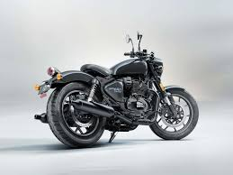
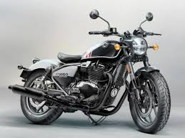

Shotgun 650
| Marca |
Modelo |
Ano |
Preço |
Oleo |
| Royal Enfield |
Shotgun 650 |
2024-atual |
R$34.403,00 |
SAE 10W-50 |
- Curiosidade 1: A Shotgun 650 nasceu a partir da SG650 Concept, e a própria Royal Enfield disse que a versão de produção ficou bem próxima do conceito.
- Curiosidade 2: A Motoverse Edition teve só 25 unidades e a marca afirmou que essa pintura especial nunca mais seria produzida.
- Curiosidade 3: A moto foi pensada como uma base para customização, com foco em autoexpressão e catálogo próprio de acessórios genuínos.
- Curiosidade 4: Torque: 5,33 kgf.m a 5650 rpm

